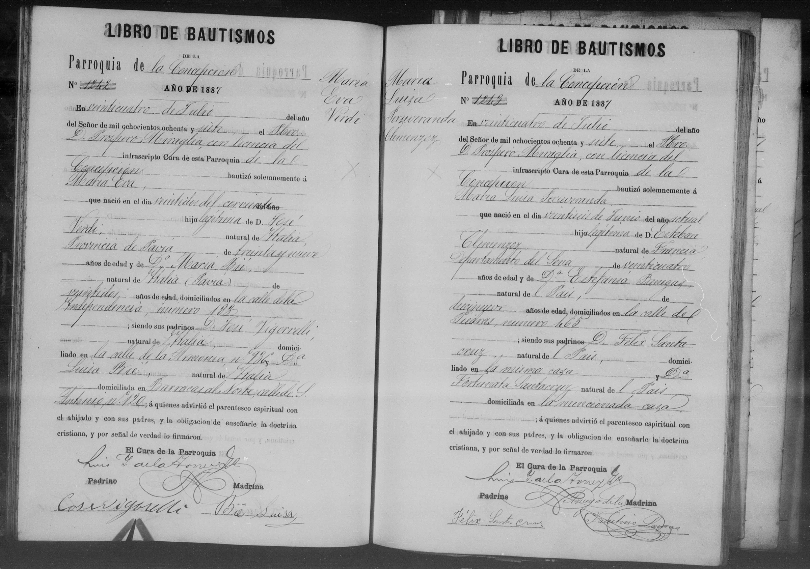

La historia
María Luisa Perseveranda nació el 26 de junio de 1887 en la ciudad de Buenos Aires — nueve meses y medio después de la boda de sus padres — y fue bautizada el 24 de julio en la misma Parroquia de la Concepción donde ellos habían casado, por el mismo Pbro. Próspero Miraglia. Hija legítima de Esteban (Etienne Clemenzo) y de Estefanía (Estefania Venegas, «Benegas», 19 años); la familia seguía en la calle Piedras 465, la casa donde Estefanía vivía de soltera.
Los padrinos, Félix Santacruz y Fortunata Santacruz, eran «del País» y vivían «en la misma casa» de Piedras 465: la familia compartía techo con ellos. La madrina no sabía firmar — firmó otro «a ruego» —, igual que la testigo Fortunata Zeballos de la boda de 1886: plausible que sea la misma mujer, casada con Félix.
De su vida adulta no hay nada documentado todavía. Fue la tercera «María Luisa» de su generación en la familia: sus primas Maria Luisa Clemenzo Roh (~1885) y Maria Luisa Clemenzo (1897) llevaron el mismo nombre.
Cronología
| Año | Fuente | Qué dice |
|---|---|---|
| 1887-06-26 | Acta de bautismo N.º 1243, Parroquia de la Concepción (Buenos Aires) | Nace en Buenos Aires; hija legítima de Esteban Clemenzoz (24, «natural de Francia, Departamento del Sena») y Estefanía Benegas (19, del País); domicilio calle Piedras 465 |
| 1887-07-24 | Ídem | Bautizada por el Pbro. Próspero Miraglia; padrinos Félix y Fortunata Santacruz, «de la misma casa» |
Qué falta / hipótesis
Líneas de investigación
- Buscar su rastro adulto (¿Santa Fe?): matrimonio, defunción — atención a la homonimia con Maria Luisa Clemenzo Roh y Maria Luisa Clemenzo
- Confirmar si Fortunata Santacruz es la Fortunata Zeballos de 1886 (¿matrimonio Santacruz–Zeballos en Buenos Aires?)
Fuentes
- Acta de bautismo N.º 1243, Parroquia de la Concepción, Ciudad de Buenos Aires, 24-07-1887 (imagen en su ficha)
Documentos
